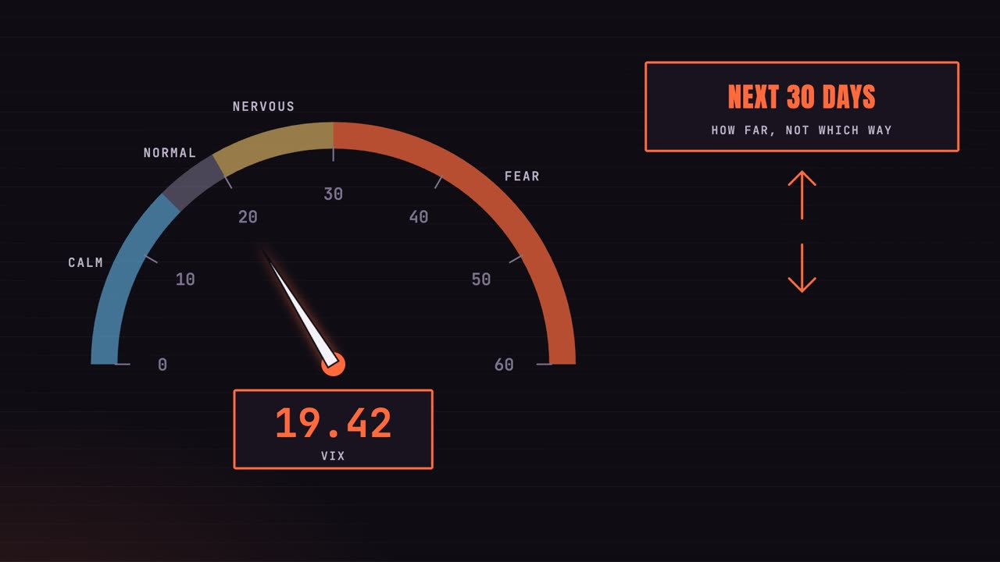
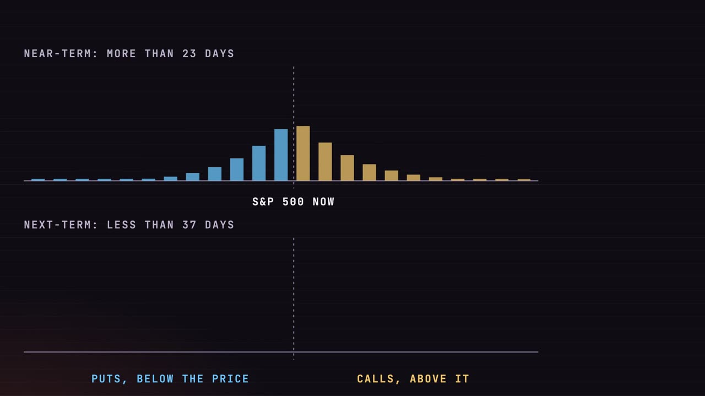
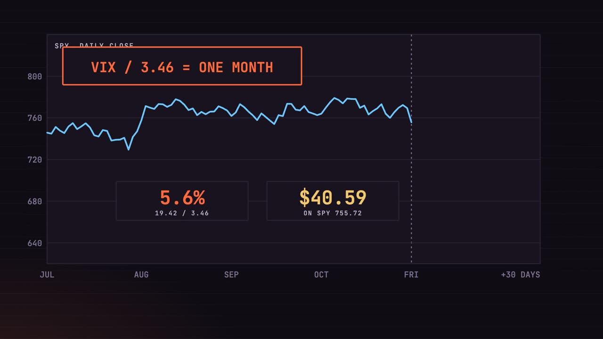
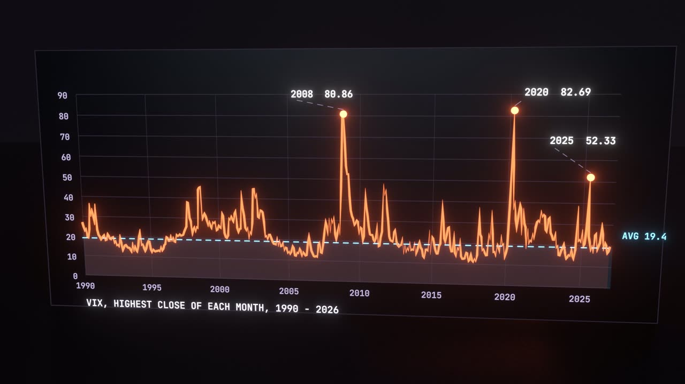
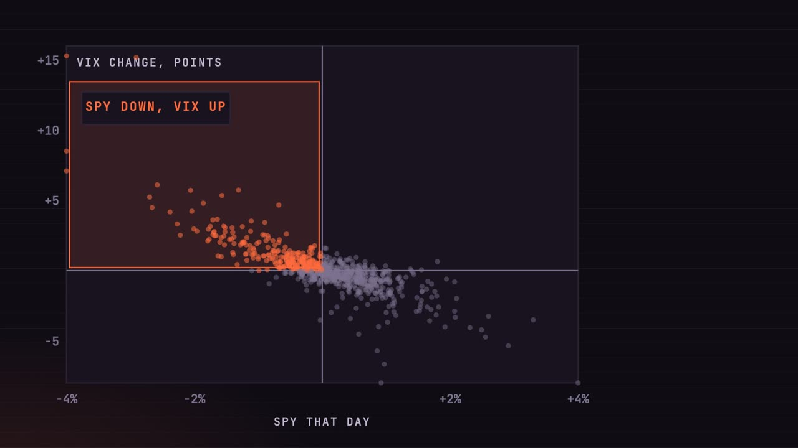
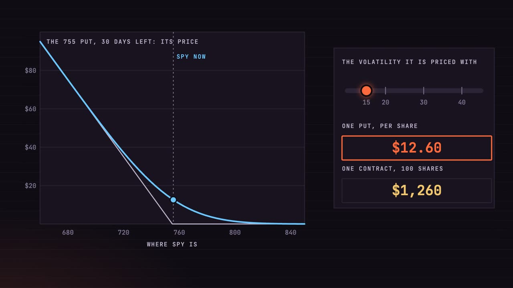
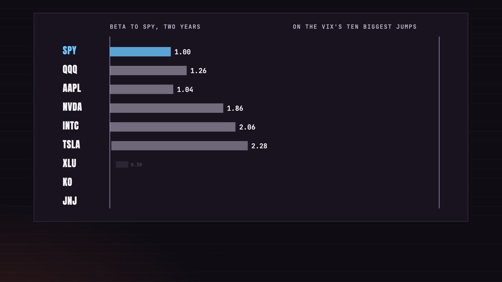
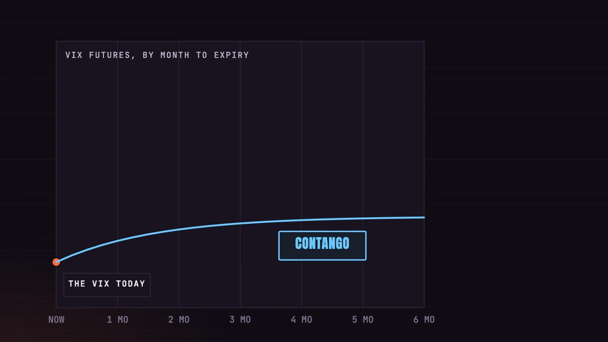
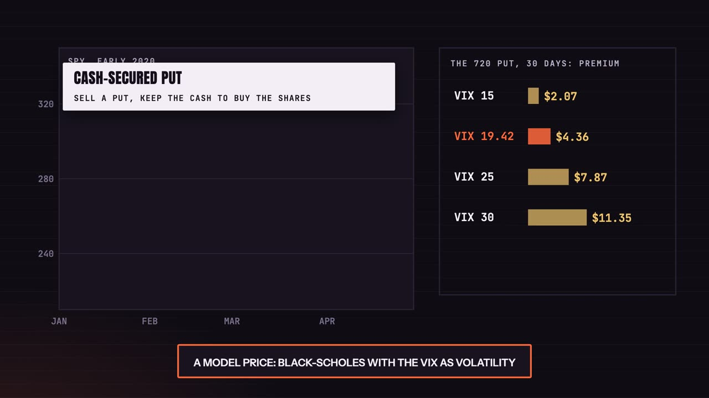
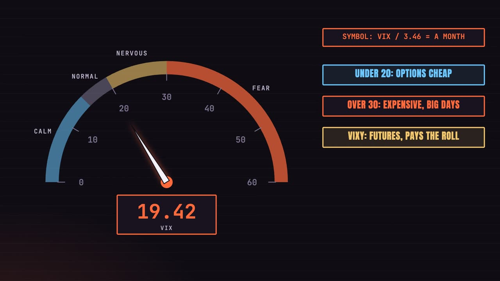

Lessons / Options, earnings and volatility
The VIX Explained: What the Fear Index Does to Options, Stocks and VIXY (and Selling Puts)
What the VIX really measures, read off S&P 500 option prices: how Cboe builds it from two expiries, how to turn it into a dollar move on SPY this month, and how often that band holds. Thirty-six years of spikes; how the VIX moves against SPY, measured over every day since 2016; what a higher VIX does to the price of a put; why single stocks differ, and why they fall together in a panic; why VIXY lost 99.9% while the VIX ended where it began (contango and the daily roll); and what to check before selling a cash-secured put when fear is high. Animation only, real data from Cboe and Alpaca. For education only, not financial advice.
Prices and numbers are as of the video's publication, November 1, 2026.
What the VIX is Watch from 0:40

The VIX is an index from Cboe, the options exchange in Chicago, and it has been published since 1993.
It answers one question: how far do traders expect the S&P 500 to move over the next 30 days? Not which way. Only how far.
And it is read straight off the prices of S&P 500 options, live, all through the trading day. It is not a survey of anyone's mood.
Read it like a speedometer. Most days it sits under 20: since 1990 it closed below 20 on 63% of days.
Above 30 is fear. That happened on only 8% of days, usually in a crash, and it rarely lasts long.
On Friday it closed at 19.42, right on its long run average of 19.4.
How it is built Watch from 1:28

So how do you get one number out of thousands of options? Start with the S&P 500 index options that expire in about a month.
Take every strike: puts below today's price, calls above it. Each bar is one option's price. Near the price they cost the most; far away, very little.
Every one of them counts. When prices are high right across the strikes, traders are paying up for protection and for the chance of a big move.
Cboe uses two expiries: one with more than 23 days left, and one with less than 37.
Every option in both rows goes into one calculation, and the two expiries are blended into exactly 30 days ahead.
Out comes one number, quoted as a percentage for a year: the volatility those prices imply. That is the VIX.
When the market drops, people rush to buy puts to protect what they own. Put prices rise, and every bar grows,
and the number that comes out rises with them. On Friday it touched 23.93. That is all a VIX spike is: option prices going up.
Reading the number Watch from 2:34

The VIX is quoted for a whole year. To read it for one month, divide it by the square root of 12, which is about three and a half.
Friday's 19.4 becomes about five and a half percent. On SPY at 755, that is $42 either way over the next 30 days.
Draw that ahead of the price and you get a band. The options market expects SPY to finish the month inside it about two times out of three.
With the VIX at 15, the band is about $33 each way.
At 30 it doubles, to 65. Same index, same price: only the fear changed.
Does SPY really stay inside? We checked every day since 2016. Over the next 21 trading days it stayed inside the band 83% of the time, not the 68 a bell curve would say.
Because the VIX usually overestimates. It was above the volatility that actually followed on 85% of days, and Cboe itself says implied volatility tends to trade at a premium. That premium is what option sellers are paid for.
Thirty-six years of the VIX Watch from 3:40

Here is every month of the VIX since 1990: the highest close in each one.
The spikes have names. The financial crisis took it to 80.86 in November 2008. The pandemic set the record close, 82.69, in March 2020. And April 2025 reached 52.
Then it always falls back. The average close is 19.4, and on a typical day it sits lower still, near its median of 17.6.
Look closely at 2020: from 14 to 82 in less than a month, then back near 20 within a year. Fear spikes fast and fades slowly.
And here is Friday, 19.42: nothing like a crash on this chart, but up from under 17 two days before.
The VIX and SPY Watch from 4:28

Every dot here is one day of the last three years: how much SPY moved, and how much the VIX changed that day.
Down days sit up and to the left. Since 2016 the VIX rose on 75% of SPY's down days, and on 98% of the days it fell 2% or more.
Measured over every day, the correlation is minus 0.77: when one goes up, the other usually goes down.
And it is lopsided. On SPY's worst days the VIX jumped five points on average; on its best days it fell only three and a half.
People buy protection in a hurry, and sell it back slowly as the calm returns. So the VIX climbs like an elevator and comes down the stairs.
The level matters too. When the VIX was under 15, SPY's next day moved four tenths of a percent on average.
Between 20 and 30, a full 1%. Over 30, more than 2% a day. A high VIX means big days, in both directions.
What it does to option prices Watch from 5:30

Every option price has volatility in it. Here is one put on SPY: the 755 strike, 30 days from expiry. The dashed line is what it pays at expiry.
Before expiry it is worth more, because there is time for SPY to fall. Priced with a VIX of 15, it costs $12.60 a share, in a simple model.
Raise the fear to 30 and the same put costs 25.55. Double the volatility, and the price about doubles.
So after a fall, protection is expensive. A buyer pays the higher price, and needs a bigger move just to break even.
A seller collects more for the very same strike. That is why anyone who sells options watches the VIX.
One more thing. Puts below the price are usually priced with more volatility than at the money, a shape traders call the smirk, so real ones often cost more than this model says.
One index, many stocks Watch from 6:24

The VIX describes the whole S&P 500. A single stock moves on its own, and each one has its own volatility.
Beta measures how much a stock moves for each move in SPY. Over the last two years NVIDIA moved about 1.9 times as much, Tesla 2.3, Intel 2.1. Coca-Cola and Johnson and Johnson barely followed it at all.
So when fear rises, the high beta names usually swing the hardest.
Now take the VIX's ten biggest one-day jumps since 2016. On those days SPY fell 5.3% on average, NVIDIA 7.7, Tesla nine.
Even Coca-Cola fell four and a half, and the utilities fund almost five. In a real panic nearly everything falls together. Low beta helps on a normal day; it is no shelter in a crash.
This week was the other kind of week. The VIX rose only two and a half points, and stocks went their own way: from Wednesday to Friday Intel fell 31% on its own news, NVIDIA five, while Coca-Cola rose 2.6.
When the VIX is moderate, each company's own story matters most. When it spikes, the market's story takes over.
Trading the VIX: VIXY Watch from 7:37

You cannot buy the VIX itself. What trades are VIX futures: contracts priced on where the VIX will be on a date ahead.
In calm times later months cost more than the VIX does today. That shape is called contango: the futures price is higher than the current price.
In a panic it flips. The near month costs the most, because the fear is now. That is called backwardation.
ProShares runs a short-term VIX futures fund called VIXY. It holds about one month of futures, and keeps it at a month by rolling: every day it sells some of the near month, and buys more of the next.
In contango that means always buying the dearer contract, then watching it slide down the curve toward the cheaper price as it ages. ProShares' own page says rolling has historically reflected significant costs.
Here is what that does over time. Since January 2016, split-adjusted, the fund lost 99.9%.
Over the same years the VIX itself went from 20.7 to 19.4, almost exactly where it started.
That loss was not fear going away. The fund lost because it paid the roll, day after day.
Year by year it is the same story. In 2024 the VIX rose 31%, and VIXY still lost 27.
It does jump in a crash. From February to mid March 2020 the VIX rose 475%, and VIXY 303. Then it gives it back: over the next year both fell 76%.
ProShares says these funds are meant for short-term horizons, and can lose a lot in as little as one day. It is a tool for days or weeks, never for holding.
Selling puts when fear is high Watch from 9:23

Now the seller's side. A cash-secured put means selling a put and setting aside the cash to buy the shares if they are put to you.
Here is the 720 put, about 5% below SPY with 30 days left, in the same simple model. At a VIX of 15 it pays $2 a share. At Friday's 19.4, 436. At 30, 11.35.
Higher fear pays more, and the VIX usually overestimates the move that follows. That is the whole case for selling when it is high.
And here is the trade itself. One SPY 720 put, sold for $4.36: $436 collected, and that is the most it can ever make.
Anywhere above 720 at expiry, you keep all of it.
Below the strike, every dollar SPY falls costs you 100. The premium only moves the point where the loss begins.
It breaks even at 715.64. Under that the loss keeps growing, all the way to the strike, less the premium: the most a cash-secured put can lose.
And a high VIX can always go higher. On the 20 seventh of February 2020 the VIX closed at 39. That already looked like fear.
SPY then fell another 25% in under four weeks, while the VIX climbed to its record. A put sold that day for a rich premium was deep in the loss.
So if you sell puts when the VIX is high, ask a few questions first. Is the cash there to buy every share at the strike?
Could you hold through a fall twice as deep as the one you can imagine? And would a put spread, with a cheaper put bought below, cap the loss better?
Then, which way is the VIX going? Near its average and falling is a very different place to sell than climbing fast, with the futures in backwardation.
Reading the VIX yourself Watch from 11:11

To use it yourself: the VIX is on Cboe's website and on most charting sites, under the symbol VIX. Divide it by three and a half for the month's expected move.
Under 20, the market is calm and options are cheap. Over 30, options are expensive, the days are big, and nearly everything moves together.
And a VIX fund follows futures, not the index, and it pays the roll.
Everything here is for education only, and not financial advice. Watch the needle, size for the day it swings, and never sell more insurance than you could pay out.